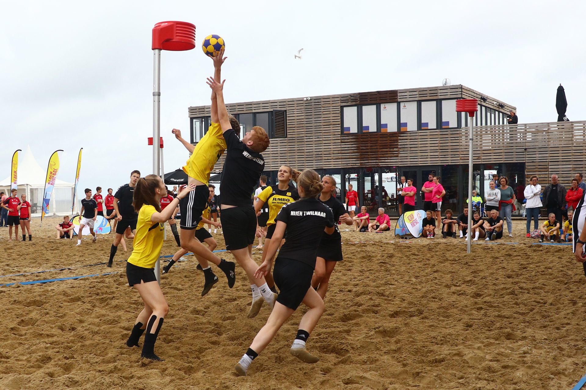

Varianten van korfbal
Vrouwenkorfbal als variant op gemengd
Sinds 1938 is er een variant op het gewone korfbal en dat is vrouwenkorfbal. Dit wordt gespeeld in twee vakken met twee partijen van elk 8 speelsters. Een grote afwijking is er niet.
In het zuiden van Nederland (Noord-Brabant, Limburg en een deel van Gelderland) werd in 1947 de Nederlandse Dames Korfbalbond (NDKB) opgericht. Vanuit het Katholieke geloof werd destijds niet gemengd gesport, maar wel speelden vrouwen deze teamsport. Niet met hesjes, zoals bij het gemengde korfbal, maar gewoon 'woman to woman'. Vrouwenkorfbal is daardoor vooral tactisch een ander spel. Iedereen mag iedereen verdedigen, daarom moet er over het algemeen iets langer gecombineerd worden, voordat de vrije schotkans ontstaat. Het vrouwenkorfbal wordt in met name Zuid-Nederland beoefend door ruim 10.000 vrouwen en kent onder andere met ingang van het seizoen 2007-2008 twee topklassen op het veld en twee hoofdklasse-poules. In de zaal blijft er één Topklasse. Hoogtepunt van de zaalcompetitie is de finale in maart in het Indoor-Sportcentrum Eindhoven, goed voor zo'n 4000 bezoekers.De NDKB voerde als eerste korfbalbond 2-vakskorfbal en midweekkorfbal in. De voormalige NDKB is in 1994 gefuseerd (subsidiekwestie) met het KNKV.
G-korfbal
Een sterk groeiende groep binnen het verenigingsleven zijn korfballers met een verstandelijke beperking. Het G-korfbal (gehandicapten korfbal) is al een tijd een volwaardige korfbalvorm met een eigen Nederlands kampioenschap.
Beachkorfbal
Een variant op het standaard korfbalspel is beachkorfbal, dat gespeeld wordt in een aantal varianten. Een variant is met 4 tegen 4 spelers en wordt gespeeld op een veld van 20x20 meter met één korf in het midden. In elke hoek van het veld is een soort driehoek. Vanuit die driehoek wordt de bal uitgenomen, en als je vanuit die driehoek scoort krijg je 2 punten in plaats van 1.
Daarnaast is er ook een variant ontwikkeld waarbij er in drietallen wordt gespeeld op een veld van 8 bij 16 meter met twee korven op 3 meter van de achterlijn. In deze laatste vorm is in 2013 voor het eerst een NK Beach georganiseerd, dat als winnaars LDODK/AH Gorredijk (bij de senioren) en AW.DTV/e-senzaz.com (bij de junioren) opleverde.
Een keer per jaar wordt er in Noordwijk (Zuid-Holland) een groot beachkorfbaltoernooi georganiseerd op het strand. Dit wordt gedaan door de Noordwijkse korfbalvereniging Fluks.
1 tegen 1
Bij deze vorm van korfbal worden de individuele kwaliteiten van korfballers met elkaar gemeten. Het spel wordt gespeeld in een cirkel met een straal van 13 meter van de korf. Binnen deze cirkel is er nog een cirkel met een straal van 6 meter van de korf. Een score binnen de binnenste cirkel levert 2 punten op en een score tussen de binnenste en de buitenste cirkel levert 1 punt op. De aanvaller heeft 45 seconden om zo veel mogelijk punten te scoren. Na afloop worden de functies omgedraaid en zal de aanvaller zijn score moeten verdedigen. De winnaar krijgt 2 punten, de verliezer nul en bij een gelijkspel krijgen beiden een punt. De ontwikkelaars van 1 tegen 1 zijn korfballegende Barry Schep en sportcommentator Frank Stout.